Nature Seed
Rajzoljon egy útvonalat. Hozd össze őket.
Meditatív mobil fizikarejtvény, amelyben a tintakorlátos vonás a szint részévé válik, és a Water Drop és a Seed együtt ébreszt egy akvarell erdőt.
Megjelenés: 2026. szeptember 10. Nature Seed. Az indító build 10 szintet, vonalhatékonysági csillagokat, folyamatos fejlődést és stabil fizikai vonalgenerálást tartalmaz.
Döntetlenkorlátozott költségvetési tételt költenek el
Csatlakozáshozza a Water Drop-t a Seed-be
Bloommegszerezni a felújított jelenetet
A jelenlegi builden belül
A vonal nem dekoráció. Ez lesz a rejtvény.
Minden végrehajtott ütés fizikai ütközési geometriát hoz létre. A játékos egyensúlyban tartja a tintát, a vonalak számát és a formát, majd figyeli, hogy a Water Drop és a Seed reagál az útvonalra. Az egysoros megoldás a legtisztább háromcsillagos eredményt éri el.
Kiadás állapota Megjelenés: 2026. szeptember 10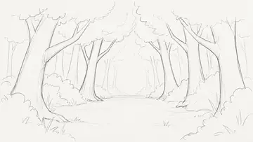
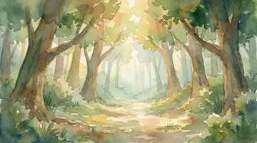
A játék áttekintése
Pihentető vonalfizikai rejtvény két kis karakter összehozásáról.
Játékos ígérete
Rajzolj egy tiszta fizikai utat, hozd össze a Water Drop-t és a Seed-t, és nézd meg, ahogy a csendes vázlat életre kel.
Indítsa el a buildet
Tíz játszható szint ötvözi az érintésrajzolást, a fizikai vonalgeometriát, a vonalhatékonysági csillagokat, a folyamatos fejlődést és a helyreállítási visszajelzéseket.
közönség
Játékosok, akik élvezik a nyugodt kirakós játékokat, az ökotémákat, a fényfizikát, a hangulatos restaurálást, a gyönyörű 2D művészeteket és a stresszmentes mobil foglalkozásokat.
Állapot
Megjelent 2026. szeptember 10-én Nature Seed néven. Az induló build a rajzolás érzésére, a szint olvashatóságára, a haladásra és a mobilstabilitásra összpontosít.
Jellemzők
Mit csinálnak a játékosok a Nature Seed-ben.
Rajzolj a fizikai útvonalak megoldásához
Minden rejtvény a tereppel, a Seed és a Water Drop-nel kezdődik. A játékos ütése hídvá válik a szándék és a fizika között.
Olvasható fizika visszajelzés
A karaktermozgást úgy tervezték, hogy egy pillantásra érthető legyen, így a sikertelen próbálkozások információnak tűnnek, nem pedig véletlenszerű büntetésnek.
Erdőhelyreállítási jutalmak
Egy szint megoldása életre kelt a jelenetben növekedéssel, színekkel és kis érzelmi visszajelzésekkel, ahelyett, hogy csak egy pontszámot jelenítene meg.
Mobil-első puzzle ingerlés
A rövid, kézzel készített szintek, az érintéses rajzolás és a tiszta sziluettek kényelmessé teszik a játékot a gyors iOS és Android munkamenetekhez.
Játékmenet
Olvassa el a szintet, rajzolja meg az útvonalat, hagyja, hogy a karakterek tanítsák a következő kísérletet.
- 01. lépésOlvassa el a vázlatot
A játékosok lejtőket, hézagokat, blokkolókat és mindkét karakter összekapcsolásának legbiztonságosabb módját keresik.
- 02. lépésHúzd meg a vonalat
Egy ujjmozdulat a karakterek fizikai útmutatójává, rámpává vagy elkapási pontjává válik.
- 03. lépésElkötelezett és megfigyelhető
A karakterek a fizikai útvonal ellen mozognak, így láthatóvá teszik a sikereket és a hibákat súlyos felhasználói felület magyarázata nélkül.
- 04. lépésVirágzás vagy finomítás
Ha a Water Drop eléri a Seed értéket, az erdő helyreáll. Ha kihagyják, a játékos tisztább információkkal újrarajzolja.
Történet / világ
Csendes erdő, szomjas mag és a törődés köré épülő rejtvénynyelv.
A Nature Seed egy egyszerű kérdéssel indult: mi lenne, ha egy lerajzolható fizikai rejtvény nem a tárgyak egymáshoz tolásáról szólna, hanem valami törékeny helyreállításról?
A világ a Seed, a Water Drop és egy erdő köré épül, amely a vázlatból lassan visszatér az életbe. Minden rejtvényt úgy kell érezni, mint egy kis törődést: a játékos tanulmányozza a földet, rajzol egy utat, és segít a víznek elérni valamit, ami növekedhet.
- Tervezési irány
- Nyugodt fizika és látható helyreállítás
- Érzelmi mag
- Seed, víz és visszanyerés
- Interakció
- Érintse meg a rajzot olvasható okokkal és okozatokkal
- Mesterségi jutalom
- Az egysoros megoldás három csillagot ér
Kiadói szög
Hangulatos puzzle átlátszó mobil kampóval.
A Nature Seed egy korlátozott vonást szintgeometriává változtat: rajzoljon egy fizikai útvonalat, egyesítse újra a Water Drop-t és a Seed-t, majd javítsa ugyanazt a megoldást egysoros háromcsillagos eredményért.
- Műfaj
- Rajzolj a fizikai rejtvények megoldásához
- Platformcél
- iOS / Android
- Munkamenet alakja
- Rövid nyugodt szintek
- Elsődleges CTA
- Nyílt kiadású anyagok
Eszközök letöltése
Nature Seed sajtó- és alkotói eszközök
Vállalkozó WebP előzetesek a szerkesztői lefedettséghez, a kiadói véleményekhez és az üzletelrendezési hivatkozásokhoz. A stúdiótól kérésre teljes felbontású forrásfájlok is elérhetők.
Márka és karakterek
{kind=link}
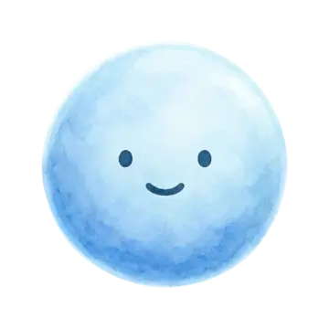
Water DropKarakterkészlet a helyreállítási kirakós fantáziához.{kind=link}
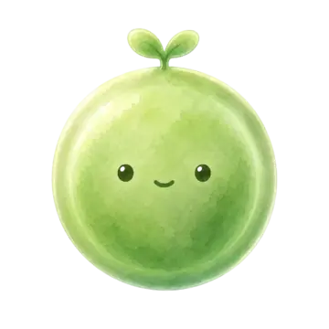
Seed karakterA Nature Seed alapvető karakterkészlete.{kind=link}
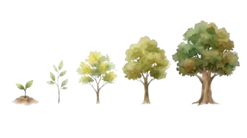
A fa növekedéseTermészet-helyreállítási jutalom.{kind=link}
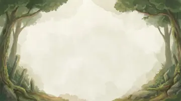
Erdő menüPihentető mobil puzzle menü háttér.{kind=link}
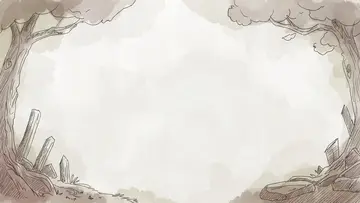
Játékmenet háttérKézzel rajzolt fizika szintű háttér.Rajzolással megoldható vázlatszintek
01. vázlatszintVízfizika rejtvénytervezet jelenet.
{kind=link}
{kind=link}
Vázlatszint 02Víz útvonaltervezési rejtvényvázlat jelenet.{kind=link}
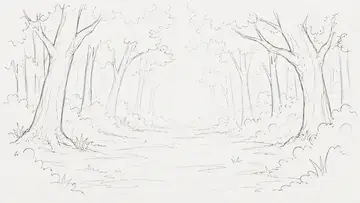
Vázlatszint 03Vonalrajz rejtvényvázlat jelenet.{kind=link}
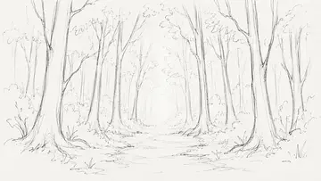
Vázlatszint 04Mobil fizika puzzle tervezet jelenet.{kind=link}
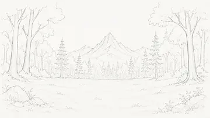
Vázlatszint 05Vízi út rejtvénytervezet jelenet.{kind=link}
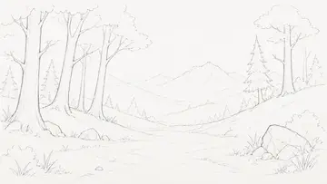
06. vázlatszintFizikai útvonal rejtvényvázlat jelenet.{kind=link}
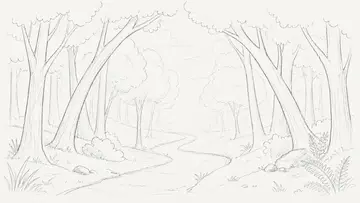
Vázlatszint 07Rajzolt vonalas rejtvényvázlat jelenet.{kind=link}
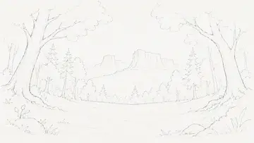
Vázlatszint 08Water flow puzzle tervezet jelenet.{kind=link}
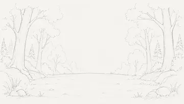
09. vázlatszintHelyreállítási rejtvényvázlat jelenet.{kind=link}
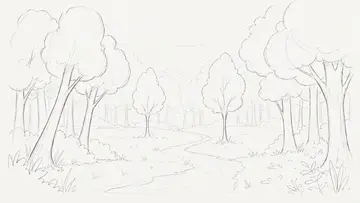
10. vázlatszintTermészet rejtvénytervezet jelenet.Restaurált rejtvényjelenetek
Visszaállított 01. szintTermészet-helyreállítási rejtvényjelenet.
{kind=link}
{kind=link}
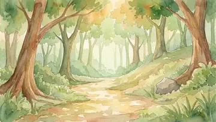
Visszaállított 02-es szintFelújított erdei kirakós jelenet.{kind=link}
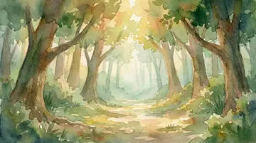
Visszaállított 03. szintVíz és erdő puzzle jelenet.{kind=link}
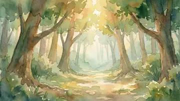
Visszaállított 04-es szintHelyreállított természeti rejtvényjelenet.{kind=link}
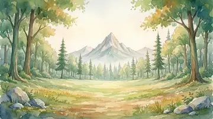
Visszaállított 05. szintNyugodt helyreállítási rejtvényjelenet.{kind=link}
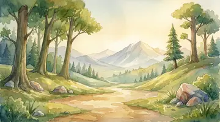
Visszaállított 06. szintTermészet helyreállítási puzzle jelenet.{kind=link}
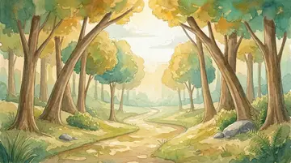
Visszaállított 07. szintHelyreállított táj puzzle jelenet.{kind=link}
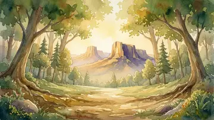
Visszaállított 08-as szintZöld helyreállítási puzzle jelenet.{kind=link}
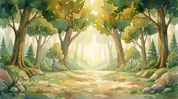
Visszaállított 09-es szintVízrejtvény helyreállítási jelenet.{kind=link}
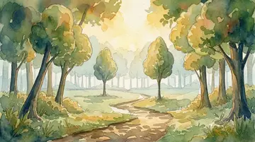
10. szint visszaállítvaBefejezett helyreállítási rejtvényjelenet.Fejlesztési út
Egy kis helyreállítási ötlettől a Nature Seed kiadásig.
- 2025 nyaraEredeti koncepció
A Nature Seed egy nyugodt mobil rejtvény ötletének indult a kapcsolatról, a természetről és a helyreállításról.
- 2025. októberSeed és Water Drop azonosság
A GDD elkészült, és a Seed és a Water Drop a játék vizuális identitásának érzelmi központjává vált.
- 2025. decemberA fejlesztés megkezdődik
Az első papírszintek megtervezése után megkezdődött az aktív fejlesztés, és az alaprendszerek játszható formába kerültek.
- 2026. februárNagy tervezet szintű bérlet
A játék elérte a nagy durva tartalmat, ami megteremtette az alapot a későbbi csiszoláshoz, egyensúlyozáshoz és gyártási finomításhoz.
- 2026. március-áprilisMechanika és szintfelülvizsgálat
Az extra mechanikát és a vázlatszinteket felülvizsgálták, egyszerűsítették és átdolgozták, hogy a játék nyugodtabb, tisztább és koncentráltabb maradjon.
- 2026. júliusFüggőleges prototípus igazolvány
A jelenlegi build 10 szintet, korlátozott vonalvezetést, hatékonysági csillagokat, folyamatos fejlődést és stabil vonalgenerálást egyetlen játszható hurokba hoz.
- 2026. szeptember 10Nature Seed kiadás
A játék Nature Seed címmel jelent meg tíz indítási szinttel, vonalhatékonysági csillagokkal, kitartó fejlődéssel és akvarell helyreállítási jutalmakkal.
Nature Seed GYIK
Válaszok játékosoknak, sajtó- és kiadópartnereknek.
Milyen rejtvény a Nature Seed?
Pihentető, rajzolással megoldható fizikai rejtvény, ahol a korlátozott vonalak fizikai tárgyakká válnak, amelyek segítenek két karakter találkozásában.
Hogyan működik a játékmenet?
Olvassa el a terepet, rajzoljon egy korlátozott útvonalat, nézze meg, hogy mindkét karakter reagál rá, és rajzolja meg újra, amikor az útvonalnak tisztább szögre van szüksége.
Mitől más?
A középpontban a nyugodt helyreállítás, az olvasható vonalfizika és a hatékony egysoros megoldások állnak, nem pedig a nagynyomású időzítők vagy a zajos meghibásodások.
Mi a jelenlegi állapot?
Megjelent 2026. szeptember 10-én Nature Seed néven, 10 indítási szinttel. A hangsúly továbbra is a rajzolás érzésén, a haladási folyamaton, az olvashatóságon és a mobil stabilitáson van.
Használhatók-e közvagyonok?
Igen, sajtó, kiadói ismertetők és bolti referenciák esetén. A forráseszközök privátak maradnak, hacsak nem kérik közvetlenül.
Nature Seed Devlog
Mi változott és mikor
- Nature Seed kiadás
A Nature Seed végleges címe alatt indult el 10 kézzel készített szinttel, vonalhatékonysági csillagokkal, kitartó fejlődéssel és akvarell helyreállítási jutalmakkal.
- 2. szintű helyreállítási és stabilitási igazolvány
A 2. szint mostantól az éles háttérpárt használja, megbízhatóbb szintbeállítással, ütközésellenőrzéssel és a befejezés visszajelzésével.
- 2026. júliusTíz szinten játszható build
A júliusi build egyesítette a korlátozott fizikai vonalvezetést, a hatékonysági csillagokat, a folyamatos fejlődést és a helyreállítási visszajelzéseket tíz szinten.
- 2026. áprilisSzintátdolgozó igazolvány
A belső felülvizsgálatot követően több vázlatszintet átdolgoztunk a szükségtelen bonyolultság megszüntetése és a mobil olvashatóság javítása érdekében.
- 2026. márciusMechanikai áttekintés
A csapat további mechanikákat tesztelt, majd eltávolította azokat, amelyek miatt az élmény túlterhelt volt.
- 2026. februárNagy tervezet szintű bérlet
A nagy durva tartalom bérlet lett a későbbi csiszolási, egyensúlyozási és gyártási finomítás alapja.
- 2025. decemberA fejlesztés megkezdődik
Az alaprendszerek a koncepcióból és a GDD-ből játszható formába kezdtek elmozdulni.
- 2025 nyaraEredeti koncepció
A Nature Seed első verziója egy nyugodt rejtvény ötletként indult a kapcsolatról, a természetről és a helyreállításról.